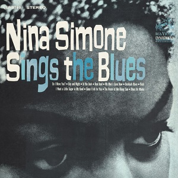
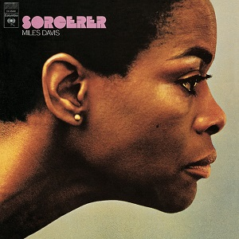

1967: Albums of the Year
-

The Velvet Underground & Nico
The Velvet Underground & Nico
9¾
-
The Jimi Hendrix Experience
Are You Experienced
8¾
-
The Doors
The Doors
8
-
Leonard Cohen
Songs of Leonard Cohen
8
-
Captain Beefheart & His Magic Band
Safe as Milk
8
-
The Jimi Hendrix Experience
Axis: Bold as Love
7¾
-

Pink Floyd
The Piper at the Gates of Dawn
7¾
-
The Beatles
Sgt. Pepper’s Lonely Hearts Club Band
7½
-

Nico
Chelsea Girl
7½
-

The Doors
Strange Days
7½
-

Cream
Disraeli Gears
7½
-
The Red Crayola with The Familiar Ugly
The Parable of Arable Land
7
-
The Beatles
Magical Mystery Tour
7
-
Tim Buckley
Goodbye and Hello
7
-
Love
Forever Changes
7
-

Pharoah Sanders
Tauhid
6¾
-

The Mothers of Invention
Absolutely Free
6¼
-
Françoise Hardy
Ma Jeunesse Fout le Camp…
6
-
Bob Dylan
John Wesley Harding
6
-
The Rolling Stones
Between the Buttons
5½
-

Dusty Springfield
Where Am I Going?
5
-
John Coltrane
Expressions
4¾
-

Robbie Băsho
The Falconer’s Arm I
4¾
-

Nina Simone
Nina Simone Sings the Blues
4¾
-
John Coltrane
Kulu Sé Mama
4¼
-

Miles Davis Quintet
Miles Smiles
4¼
-

Miles Davis
Sorcerer
4¼
-

Buffalo Springfield
Buffalo Springfield Again
4¼
-

Robbie Băsho
The Falconer’s Arm II
4
-

Gal Costa / Caetano Veloso
Domingo
3¾
-
Scott Walker
Scott
3¾
-

Otis Redding / Carla Thomas
King & Queen
3¾
-
The Who
The Who Sell Out
3½
-

The Sonics
Introducing The Sonics
3½
-
Van Morrison
Blowin’ Your Mind
3½
-
Stan Getz
Sweet Rain
3¼
-

Nina Simone
High Priestess of Soul
3¼
-

Chico Buarque
Volume 2
3
-
The Rolling Stones
Their Satanic Majesties Request
2¾
-

Carlos Paredes
Guitarra Portuguesa
2¾
-

Bill Evans
Further Conversations With Myself
2½
-
Robbie Băsho
Băsho Sings
2½
-
Ewa Demarczyk
Ewa Demarczyk śpiewa piosenki Zygmunta Koniecznego
2½
-
Jimmy Smith / Wes Montgomery
Jimmy & Wes: The Dynamic Duo
2½
-
David Bowie
David Bowie
2½
-

Bill Evans
A Simple Matter of Conviction
2¼
-

Dionne Warwick
The Windows of the World
2¼
-

Dolly Parton
Hello, I'm Dolly
1¾
-

Elvis Presley
How Great Art Thou
1¾
-

The Deviants
Ptooff!
1½
-
Nancy Sinatra
Country, My Way
1½
-

Wes Montgomery
A Day in the Life
1½
-
Index
The Index
1½
-

Cher
With Love
1½
-

Marianne Faithfull
Love in a Mist
1¼
-

Tom Jones
Green, Green Grass of Home
1¼
-
James Brown
James Brown Sings Raw Soul
1
-

Tom Jones
13 Smash Hits
1
-

Stevie Wonder
I Was Made to Love Her
1
-

Nancy Sinatra
Sugar
1
-
Stevie Wonder
Someday at Christmas
0¾